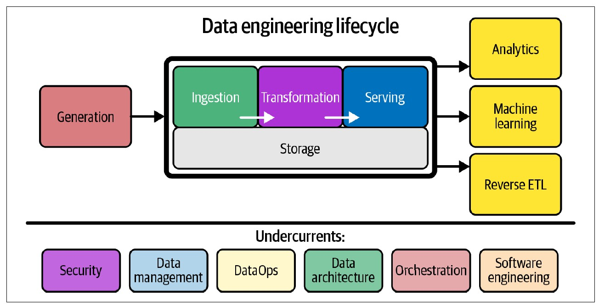

Introducción a la ingeniería de datos
Roles en el ecosistema de datos
Introducción
Objetivo
Identificar los principales roles relacionados con los datos y comprender la participación del ingeniero de datos dentro del ciclo de vida de los datos.
Reconocer las etapas que conforman el ciclo de vida de la ingeniería de datos.
Pregunta
¿Quiénes participan en el ciclo de vida de los datos y cuál es el papel de la ingeniería de datos?
Roles relacionados con los datos
Ingeniero, analista y científico de datos
Diferentes profesionales trabajan con los datos dependiendo del objetivo y la etapa del ciclo.
- Ingeniero de datos: construye y mantiene los sistemas que permiten obtener, almacenar, transformar y disponibilizar los datos.
- Analista de datos: utiliza los datos para responder preguntas, identificar patrones y comunicar resultados.
- Científico de datos: utiliza los datos para realizar análisis, experimentación y desarrollar modelos.
Participación en el ciclo de vida
| Etapa | Ingeniero de datos | Analista de datos | Científico de datos |
|---|---|---|---|
| Captura | ● | ||
| Ingesta | ● | ||
| Almacenamiento | ● | ||
| Procesamiento | ● | ● | ● |
| Análisis | ● | ● | |
| Visualización y comunicación | ● | ● | |
| Conservación y eliminación | ● |
La participación de cada rol puede variar dependiendo de la organización y del problema.
Idea clave
La ingeniería de datos, el análisis de datos y la ciencia de datos son disciplinas diferentes pero complementarias.
La ingeniería de datos se encuentra generalmente antes del análisis y la ciencia de datos, proporcionando los datos que estos necesitan para realizar su trabajo.
Ingeniería de datos
¿Qué es la ingeniería de datos?
La ingeniería de datos desarrolla y mantiene sistemas y procesos que permiten convertir datos crudos en datos consistentes, accesibles y útiles para otros usuarios y sistemas.
El ingeniero de datos gestiona este proceso desde que los datos se obtienen de los sistemas de origen hasta que están disponibles para ser utilizados.
Ciclo de vida de la ingeniería de datos
Reis y Housley dividen el ciclo de vida de la ingeniería de datos en cinco etapas principales:
- Generación
- Almacenamiento
- Ingesta
- Transformación
- Servicio de datos
Ciclo de vida de la ingeniería de datos

Generación
La generación ocurre en los sistemas donde se producen originalmente los datos.
Un sistema de origen puede ser, por ejemplo:
- Una aplicación.
- Una base de datos transaccional.
- Un dispositivo IoT.
El ingeniero de datos necesita comprender cómo se generan los datos para poder utilizarlos posteriormente.
Almacenamiento
El almacenamiento determina cómo y dónde se guardan los datos.
A diferencia de otras etapas, el almacenamiento puede aparecer en diferentes puntos del ciclo de ingeniería de datos.
La forma en que los datos son almacenados influye en cómo podrán ser ingeridos, transformados y utilizados.
Ingesta
La ingesta consiste en obtener los datos desde los sistemas de origen e incorporarlos al sistema de datos.
Esta etapa conecta los sistemas que generan los datos con las siguientes etapas del ciclo.
Transformación
La transformación modifica los datos desde su forma original para convertirlos en datos útiles.
Puede incluir operaciones como:
- Conversión de tipos.
- Estandarización de formatos.
- Eliminación de datos incorrectos.
- Normalización.
- Agregación.
Servicio de datos
El servicio de datos consiste en poner los datos preparados a disposición de quienes los necesitan.
Los datos pueden ser utilizados posteriormente para:
- Análisis de datos.
- Reportes y dashboards.
- Machine learning.
- Otros sistemas y aplicaciones.
Elementos transversales
El ciclo de ingeniería de datos también está acompañado por una serie de elementos transversales (undercurrents) que intervienen a lo largo de todas sus etapas.
- Seguridad: protección de los datos y control de acceso.
- Gestión de datos: organización, calidad y gobierno de los datos.
- DataOps: automatización, monitoreo y confiabilidad de los procesos.
- Arquitectura de datos: diseño y organización de los sistemas de datos.
- Orquestación: coordinación de tareas y dependencias.
- Ingeniería de software: desarrollo y mantenimiento de los sistemas que procesan datos.
No son etapas adicionales del ciclo: son prácticas que dan soporte a todo el ciclo de ingeniería de datos.
Resumen
- El ingeniero, analista y científico de datos participan en distintas etapas del ciclo de vida de los datos y cumplen funciones complementarias.
- La ingeniería de datos construye los sistemas y procesos que permiten convertir datos crudos en datos útiles y disponibles para su consumo.
- El ciclo de vida de la ingeniería de datos comprende generación, almacenamiento, ingesta, transformación y servicio.
- El almacenamiento puede estar presente en diferentes etapas del ciclo.
- Las etapas no forman una secuencia rígida: pueden repetirse, superponerse o ejecutarse en diferente orden.
- Seguridad, gestión de datos, DataOps, arquitectura, orquestación e ingeniería de software son elementos transversales que dan soporte a todo el ciclo.
- El objetivo final es servir datos que puedan ser utilizados para análisis, machine learning y otros casos de uso.
Referencias
Pregunta